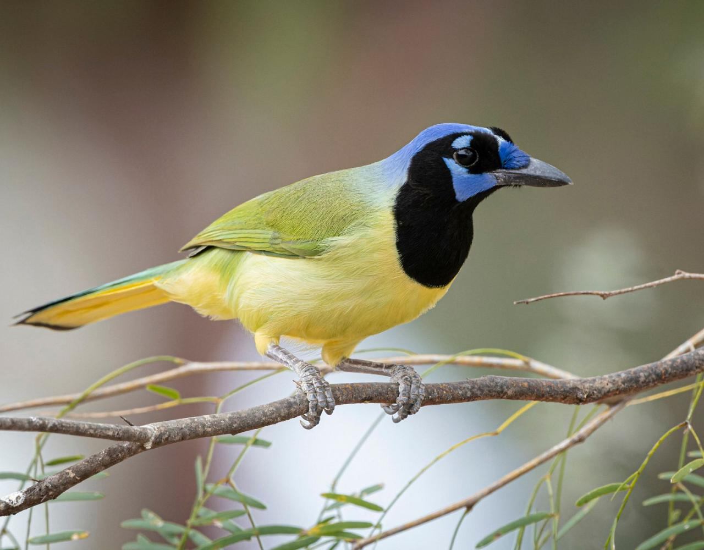
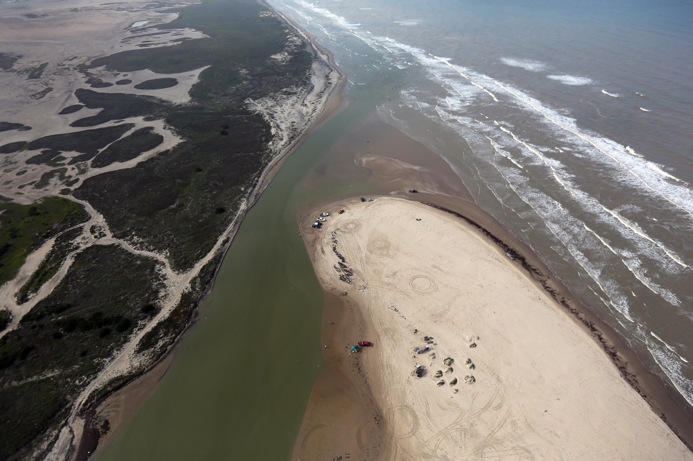
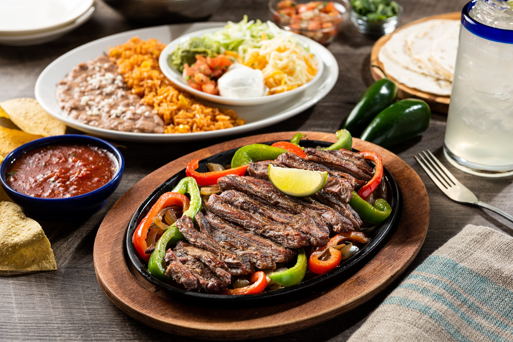
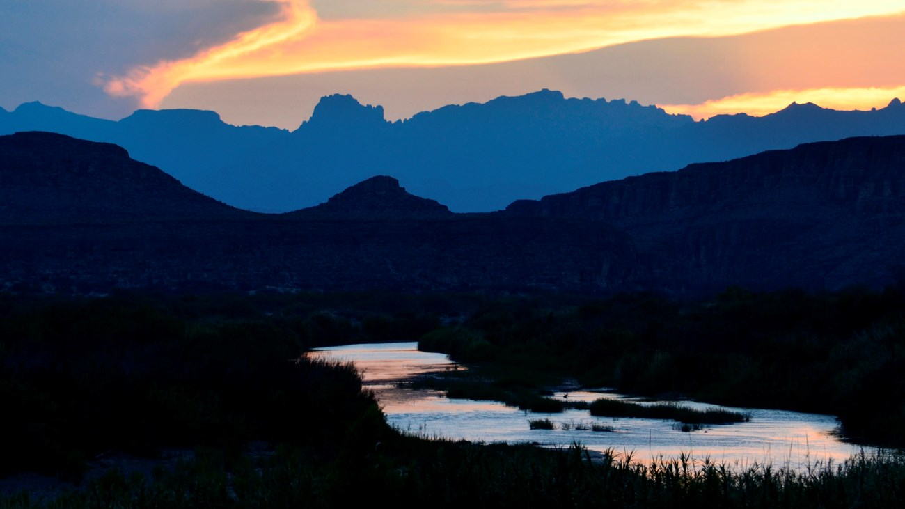
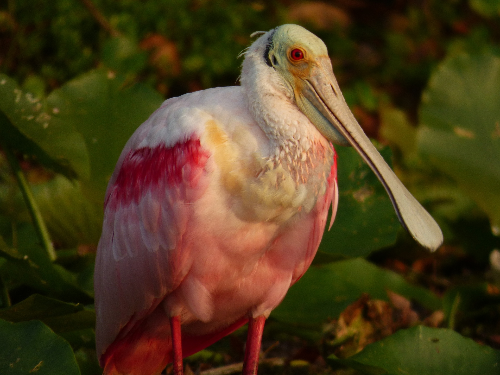

© Naturalist Journeys500 Species on the Flyway
The Rio Grande Delta, known locally as the Lower Rio Grande Valley, sits at the convergence of four major ecological zones, making it one of the most important birdwatching destinations in all of North America. Over 500 bird species have been recorded here, drawn by the delta's unique mix of subtropical scrub, coastal wetlands, and riparian forest. The colourful green jay, the brilliant altamira oriole, and the elusive ferruginous pygmy owl are just a few of the species that draw birders from around the world.
Every spring and autumn, millions of migratory birds funnel through the delta along the Great Texas Coastal Flyway, one of the most significant bird migration corridors in the Western Hemisphere. The Santa Ana National Wildlife Refuge and the Bentsen–Rio Grande Valley State Park are the premier spots to witness this annual spectacle, offering guided tours and tram rides through habitats that simply do not exist anywhere else in the United States.
 © Authentic Texas
© Authentic Texas
The Resacas: A Hidden Water World
The Rio Grande Delta is defined by its extraordinary network of resacas, ancient oxbow lakes formed as the river slowly shifted its course over thousands of years. These crescent-shaped wetlands are now critical wildlife refuges, sheltering alligators, river turtles, roseate spoonbills, and dozens of species of wading birds within the heart of one of the most densely populated border regions in the United States.
The delta's thornscrub and riparian forest are among the last refuges for the endangered ocelot in the United States. Fewer than 60 individuals are estimated to remain in the wild here. Conservation efforts led by wildlife organisations and the US Fish and Wildlife Service have created wildlife corridors linking fragmented habitat patches, giving this secretive spotted cat a fighting chance of survival in the only place it still roams north of the Mexican border.

© NASA Earth ObservatoryTwo Countries, One Living River
The Rio Grande stretches over 3,000 kilometres from the Rocky Mountains of Colorado all the way to the Gulf of Mexico, forming the entire border between Texas and Mexico along its lower course. At its mouth near Boca Chica, the river arrives exhausted, heavily drained by agriculture and cities upstream, as a shallow ribbon of water that barely makes it to the sea. Yet the delta it has built over millennia remains a landscape of quiet, enduring beauty.
Boca Chica Beach at the river's mouth is one of the most remote corners of the Texas coast, a wide, wind-swept shoreline where the brown water of the Rio Grande dissolves into the green Gulf of Mexico. The surrounding Boca Chica State Park protects coastal dunes, tidal flats, and rare nesting sites for the endangered Kemp's ridley sea turtle, one of the world's rarest sea turtles, which still returns each season to lay its eggs on these quiet shores.

© TripAdvisor / McAllenTex-Mex: A Culture Born on the Border
The Rio Grande Delta is the birthplace of Tex-Mex cuisine, a cooking tradition that grew from the blending of Mexican and Texan cultures along this shared border over hundreds of years. The Valley's famous Ruby Red grapefruit, grown in the subtropical delta soil, is one of the most prized citrus fruits in the world. Alongside it, chilli peppers, maize, and fresh Gulf seafood form the backbone of a local food culture that is entirely its own.
The twin cities of Brownsville, Texas and Matamoros, Mexico face each other across the river, connected by bridges and centuries of shared history. Exploring both sides gives visitors a genuine taste of border life, the music, the markets, the architecture, and the warmth of a community that has always lived between two worlds. The region's Tejano and norteño music traditions fill the air at festivals and restaurants, and the Historic Brownsville Museum tells the full story of this remarkable cultural crossroads.
Activities &
Adventures
Discover the many ways to experience the Rio Grande Delta, from fishing in ancient resaca lakes to world-class birdwatching and cross-border cultural tours.

Delta Gallery
© Authentic Texas

© NPS / Rio Grande Village
© Wikipedia / Roseate Spoonbill